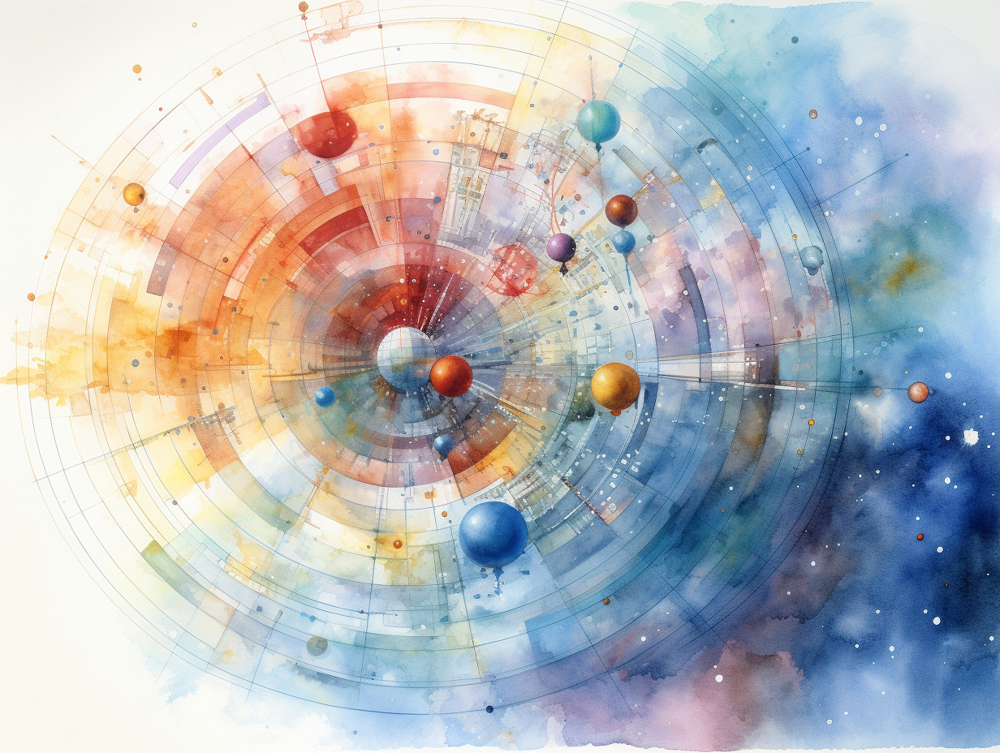
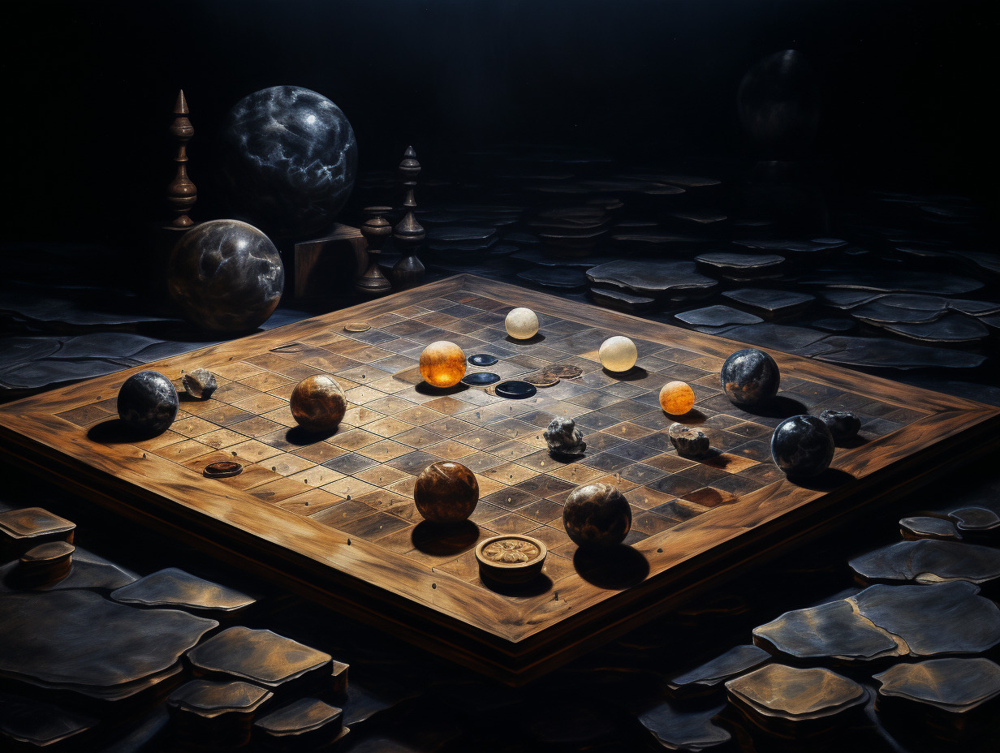

The Universe as a Game
Hermann Hesse’s Glass Bead Game (4)
If you like reading about philosophy, here's a free, weekly newsletter with articles just like this one: Send it to me!
This is the fourth and last part of a series on Hesse’s Glass Bead Game. Find the previous parts right here:

Hermann Hesse’s ‘The Glass Bead Game’ may be his greatest novel. It combines a theory of history and education with Zen, and meditations on friendship and duty.
In the first part of this series, we talked about the “age of the feuilleton,” which is essentially our own age: an age of distractions, where knowledge has been degraded into “infotainment,” gossip and listicles. It is amazing that Hesse could so accurately foresee these developments when he wrote his book in the 1940s.

At the centre of Hermann Hesse’s Glass Bead Game is a grand vision of life in Castalia, a province of scholars.
In the second part, we discussed the scholarly province “Castalia,” Hesse’s version of a learned utopia, in which monk-like scholars enjoy the freedom of lifelong research, no questions asked. Of course, the author does ask the question whether this would be a good world or not, and there are all sorts of issues that the books touches upon: do scholars have a responsibility to lead the non-scholarly world? Can this even work? Does the world have a duty to support a learned province like Castalia, and why exactly? Are scholars like those in Castalia better or worse people than those outside? And many more. The book is surprisingly open on the answers – Hesse recognises the problems of his utopia, and, in the end, Josef Knecht leaves Castalia and his high-ranking master’s job to become the private tutor of a boy “outside.”

Hermann Hesse’s Glass Bead Game contains multiple references to Chinese philosophy and religion. We unpack Hesse’s orientalist utopia.
In the third part, we took a closer look at the role of “Eastern” and Chinese motifs in the book and in Hesse’s work in general, because Chinese culture forms in many ways the basis upon which the idea of the Glass Bead Game is built.
The universe as a game
Looking at the Glass Bead Game, we must keep in mind that Hesse, a non-scientist, a poet, in this book attempts to explain a formal system invented many hundred years in the future by people who were decidedly non-poets – rational scientists with deep knowledge of the natural sciences, but also formal systems, mathematics, music theory and games. Hesse’s description is therefore bound to sound a bit like Homer or Dante writing an ode to the aeroplane a thousand years before the first flying machine was invented.
The preface to the archive.org edition of the book, by Theodore Ziolkowski, includes the following passage:
What is the “Glass Bead Game”? In the idyllic poem “Hours in the Garden” (1936), which he wrote during the composition of his novel, Hesse speaks of “a game of thoughts called the Glass Bead Game” that he practiced while burning leaves in his garden. As the ashes filter down through the grate, he says, “I hear music and see men of the past and future. I see wise men and poets and scholars and artists harmoniously building the hundred-gated cathedral of Mind.” These lines depict as personal experience that intellectual pastime that Hesse, in his novel, was to define as “the unio mystica of all separate members of the Universitas Litterarum” and that he bodied out symbolically in the form of an elaborate Game performed according to the strictest rules and with supreme virtuosity by the mandarins of his spiritual province. This is really all that we need to know. The Glass Bead Game is an act of mental synthesis through which the spiritual values of all ages are perceived as simultaneously present and vitally alive. It was with full artistic consciousness that Hesse described the Game in such a way as to make it seem vividly real within the novel and yet to defy any specific imitation in reality. The humorless readers who complained to Hesse that they had invented the Game before he put it into his novel — Hesse actually received letters asserting this! — completely missed the point. For the Game is of course purely a symbol of the human imagination and emphatically not a patentable “Monopoly” of the mind.
I couldn’t disagree more. Hesse created a whole world around the Game, described it in loving detail on many pages, just to give us “a symbol of the human imagination”? I think it’s Ziolkowski who here completely misses the point.
The Game is the ultimate religious vision, the scientific utopia of a calculus of the whole of reality, a unified theory not only of all of physics, but also of all of human culture, a grimoire of the most visionary magic. When Asimov talks of psychohistory, there is an echo of the Glass Bead Game in there. When Faust talks of “was die Welt – im Innersten zusammenhaelt” (“…so that I may perceive whatever holds – The world together in its inmost folds”) he shares the same dream. Of course, Hesse could not possibly have described the Game any more precisely than he did. That kind of formal description of everything has not been invented yet, and Hesse, not being a scientist, would not have been able to make sense of it anyway. One thing is sure: the Glass Bead Game does not involve any glass beads. In a short paragraph, Hesse mentions that it was first invented as a kind of musical abacus, where glass beads represented musical notes. But very soon, the beads get replaced by symbols, abstract ideograms, a “vocabulary” that is maintained and organised by the Castalian authorities.

German Romantics, much like their English counterparts, valued spontaneity and naturalness, in part as a reaction to the beginning loss of the natural world due to industrialisation and urbanisation.
The Glass Bead Game has both a fictional history within Hesse’s book, but also, fascinatingly, a real one. For the dream of a super-science, of a study that links everything to everything else, has always been with us throughout human history.

Created by Midjourney.
The origins
In the Glass Bead Game, Hesse tells us of the origins of the Game:
How far back the historian wishes to place the origins and antecedents of the Glass Bead Game is, ultimately, a matter of his personal choice. For like every great idea it has no real beginning; rather, it has always been, at least the idea of it. We find it foreshadowed, as a dim anticipation and hope, in a good many earlier ages. There are hints of it in Pythagoras, for example, and then among Hellenistic Gnostic circles in the late period of classical civilization. We find it equally among the ancient Chinese, then again at the several pinnacles of Arabic-Moorish culture; and the path of its prehistory leads on through Scholasticism and Humanism to the academies of mathematicians of the seventeenth and eighteenth centuries and on to the Romantic philosophies and the runes of Novalis’s hallucinatory visions. This same eternal idea, which for us has been embodied in the Glass Bead Game, has underlain every movement of Mind toward the ideal goal of a universitas litterarum, every Platonic academy, every league of an intellectual elite, every rapprochement between the exact and the more liberal disciplines, every effort toward reconciliation between science and art or science and religion. Men like Abelard, Leibniz, and Hegel unquestionably were familiar with the dream of capturing the universe of the intellect in concentric systems, and pairing the living beauty of thought and art with the magical expressiveness of the exact sciences. In that age in which music and mathematics almost simultaneously attained classical heights, approaches and cross-fertilizations between the two disciplines occurred frequently. …
And we suspect, although we cannot prove this by citations, that the idea of the Game also dominated the minds of those learned musicians of the sixteenth, seventeenth, and eighteenth centuries who based their musical compositions on mathematical speculations. Here and there in the ancient literatures we encounter legends of wise and mysterious games that were conceived and played by scholars, monks, or the courtiers of cultured princes. These might take the form of chess games in which the pieces and squares had secret meanings in addition to their usual functions…
But then the Glass Bead Game arrives. From humble beginnings as a way to encode musical notation with actual glass beads, it soon finds its real purpose. Scholars feel that the time has come for the invention of a new, international language of meaning (see the previous article in this series for a discussion of meaning in languages like Chinese):
Such a language, like the ancient Chinese script, should be able to express the most complex matters graphically, without excluding individual imagination and inventiveness, in such a way as to be understandable to all the scholars of the world. It was at this point that Joculator Basiliensis applied himself to the problem. He invented for the Glass Bead Game the principles of a new language, a language of symbols and formulas, in which mathematics and music played an equal part, so that it became possible to combine astronomical and musical formulas, to reduce mathematics and music to a common denominator, as it were. Although what he did was by no means conclusive, this unknown man from Basel certainly laid the foundations for all that came later in the history of our beloved Game.
You can see the Pythagorean element in this combination of mathematics, music and astronomy. The same frequency ratios that apply to the creation of musical scales are found in the ellipses that celestial bodies draw with their orbits.
After Joculator Basiliensis' grand accomplishment, the Game rapidly evolved into what it is today: the quintessence of intellectuality and art, the sublime cult, the unio mystica of all separate members of the Universitas Litterarum. In our lives it has partially taken over the role of art, partially that of speculative philosophy. …
One last element was still missing at this point:
Up to that time every game had been a serial arrangement, an ordering, grouping, and confronting of concentrated concepts from many fields of thought and aesthetics, a rapid recollection of eternal values and forms, a brief, virtuoso flight through the realms of the mind. Only after some time did there enter into the Game, from the intellectual stock of the educational system and especially from the habits and customs of the Journeyers to the East, the idea of contemplation.
… Ultimately, for the audiences at each Game it became the main thing. This was the necessary turning toward the religious spirit. What had formerly mattered was following the sequences of ideas and the whole intellectual mosaic of a Game with rapid attentiveness, practiced memory, and full understanding. But there now arose the demand for a deeper and more spiritual approach. After each symbol conjured up by the director of a Game, each player was required to perform silent, formal meditation on the content, origin, and meaning of this symbol, to call to mind intensively and organically its full purport. The members of the Order and of the Game associations brought the technique and practice of contemplation with them from their elite schools, where the art of contemplation and meditation was nurtured with the greatest care. In this way the hieroglyphs of the Game were kept from degenerating into mere empty signs.
We see here again Hesse’s (and every truly philosophically minded person’s) longing for meaning and significance, as opposed to empty virtuosity. As just publishing meaningless papers is not true scholarship, mechanically creating Glass Bead Games misses the point. And this is perhaps another prophetic element in this book. In our time, when student homework as well as research papers, news items and blog posts are written by AI (not here, by the way!), there is a worry that perhaps we may be losing something. If our whole cultural output is replaced by AI output, what exactly is it that may be lost?
Your ad-blocker ate the form? Just click here to subscribe!
Hesse would say: AI leads to the degeneration of ideas “into mere empty signs.” And this is just right: For a Large Language Model like ChatGPT, every word, every sentence, every idea is just “a mere sign.” A number in a gigantic tree of lexical nodes, signifying nothing at all. I have the feeling that the more we move into the 21st century, the more we will see how very prophetic the Glass Bead Game is. We can just hope that eventually someone will also come up with a real equivalent of Castalia before it is too late.

Let’s have one last look at how Hesse describes an actual game:
… The Game of games had developed into a kind of universal language through which the players could express values and set these in relation to one another. Throughout its history the Game was closely allied with music, and usually proceeded according to musical or mathematical rules. One theme, two themes, or three themes were stated, elaborated, varied, and underwent a development quite similar to that of the theme in a Bach fugue or a concerto movement.
A Game, for example, might start from a given astronomical configuration, or from the actual theme of a Bach fugue, or from a sentence out of Leibniz or the Upanishads, and from this theme, depending on the intentions and talents of the player, it could either further explore and elaborate the initial motif or else enrich its expressiveness by allusions to kindred concepts.
Beginners learned how to establish parallels, by means of the Game’s symbols, between a piece of classical music and the formula for some law of nature. Experts and Masters of the Game freely wove the initial theme into unlimited combinations.
For a long time one school of players favored the technique of stating side by side, developing in counterpoint, and finally harmoniously combining two hostile themes or ideas, such as law and freedom, individual and community. In such a Game the goal was to develop both themes or theses with complete equality and impartiality, to evolve out of thesis and antithesis the purest possible synthesis. In general, aside from certain brilliant exceptions, Games with discordant, negative, or skeptical conclusions were unpopular and at times actually forbidden. This followed directly from the meaning the Game had acquired at its height for the players. It represented an elite, symbolic form of seeking for perfection, a sublime alchemy, an approach to that Mind which beyond all images and multiplicities is one within itself — in other words, to God. Pious thinkers of earlier times had represented the life of creatures, say, as a mode of motion toward God, and had considered that the variety of the phenomenal world reached perfection and ultimate cognition only in the divine Unity. Similarly, the symbols and formulas of the Glass Bead Game combined structurally, musically, and philosophically within the framework of a universal language, were nourished by all the sciences and arts, and strove in play to achieve perfection, pure being, the fullness of reality. Thus, “realizing” was a favorite expression among the players. They considered their Games a path from Becoming to Being, from potentiality to reality…
Real Glass Bead Games
Hesse was a dreamer, a romantic, but we saw that he was also a visionary, and I have no doubt that he hoped that one day something like the Glass Bead Game would become possible. The Game, as he describes it (and he does say something like this himself at one point), is the perfect marriage between religion and science, spirituality and technology, art and mathematics. In a more general sense, it represents the union of what is distinct and at odds in every human being: the right and the left brain, planning and intuition, Faustian will and Daoist submission, creativity and dull obedience, physics and magic.
I don’t know if Hesse was aware of the sciences of his time, but it’s interesting to note that already back then some scientists had started to do research on what one could see as the elements of a real-world Glass Bead Game. In 1944, Erwin Schroedinger (the one with the cat), a theoretical physicist, published a highly daring book with the title “What is Life?” It wasn’t common at that time for a physicist to discuss biology, but one could argue that this was the beginning of an approach between the disciplines that later led to the development of biophysics and biochemistry. Already much earlier, in the first half of the 19th century, Carnot and Clausius helped establish thermodynamics, with its truly astonishing laws of entropy that govern the behaviour of everything in the universe – from star clusters to steam engines and human body cells.
In 1948, Shannon combined the principle of entropy with the new science of information theory, and created a thermodynamically-inspired definition of information. In the 1970s, Ilya Prigogine expressed the one-directionality of time in terms of the law of entropy, and thus brought physics and information theory together with the philosophy of time, to discuss irreversibility in biological systems. In 1953, Watson and Crick first precisely described the chemical basis of inheritance, the DNA structure, thus establishing the link between chemistry and the sciences of life. Together with Darwin’s theory of evolution, this firmly anchored the mysteries of life in natural science.
Mathematician and computer scientist Claude Shannon, imagined by Midjourney.
These discoveries, of which not everyone is aware all the time, still have filtered down into our everyday consciousness – and they make it possible for us to see ourselves in ways that would have been impossible a hundred years earlier. Just his afternoon, for example, I was able to plausibly explain to my daughter, when she asked, why old people like me look uglier than young people. Hesse would not have been able to do this when he published the Glass Bead Game in 1943.
Onwards: In 1948, just five years after the Glass Bead Game, Norbert Wiener published his “Cybernetics: Or Control and Communication in the Animal and the Machine,” which, as the title says, was a grand vision of an interdisciplinary science of control and communication. This was further popularised by Ashby’s “Introduction to Cybernetics” (1956), which promised to describe any process as a transformation of variables and the flow of information, making phenomena as diverse as music, biological homeostasis, remote-controlling a toy car and the working of the mind, in principle, accessible to the same kind of mathematical analysis.
Cybernetics was immensely inspiring and fruitful, and continued all the way into the 1990s to develop – first into second-order cybernetics, and then into the theory of autopoetic systems (another word for living and cognitive systems, but with a cybernetics twist – Maturana and Varela), into system-theory-inspired descriptions of society (Luhmann), and even into anthropology and education (Bateson). Not all of that was gold, of course, and often superficial similarities between processes would be taken to be signs with deeper significance. Many cybernetics papers of the time read a bit like sales copy for a discipline that nobody had asked for; but it still answered to the deep need of the human mind for meaning and integration that Hesse first immortalised in the Glass Bead Game.
Finally, the lineage of real-world Glass Bead Games brought forth Chaos Theory in the 1970s and 1980s: Lorenz attractors and Mandelbrot sets led to the popularisation of chaos, like in the well-known and often-quoted “butterfly effect,” where the beating of a butterfly’s wings might, under specific conditions, cause a hurricane.
I hope that this short overview makes it clear that Hesse’s dream was not only a literary device and “of course purely a symbol of the human imagination,” but a very prophetic look into the future of science. Some of what Hesse dreamed of has today become mainstream science – Schroedinger, Watson and Crick, Prigogine and many others have received Nobel Prizes for their work. Others again, like Bateson, have become revered by particular groups within their disciplines and keep exerting influence on their fields today. And then, of course, Hermann Hesse himself received a Nobel Prize in Literature in 1946, “for his inspired writings which, while growing in boldness and penetration, exemplify the classical humanitarian ideals and high qualities of style.”
To see how exceptional this was, consider that this was a Nobel Prize given to a German only two years after the end of the Second World War.
◊ ◊ ◊
If you liked this series, you will love the Daily Philosophy newsletter! You can subscribe right here:
Your ad-blocker ate the form? Just click here to subscribe!

Andreas Matthias on Daily Philosophy: